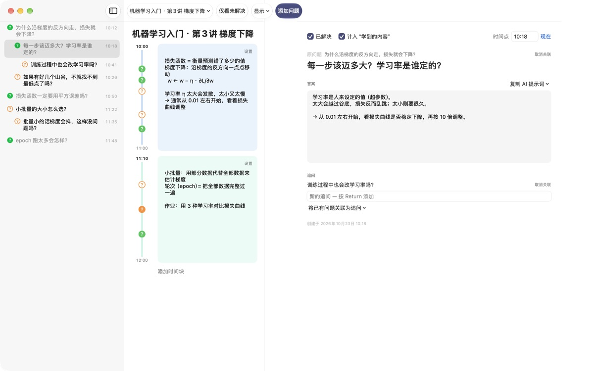
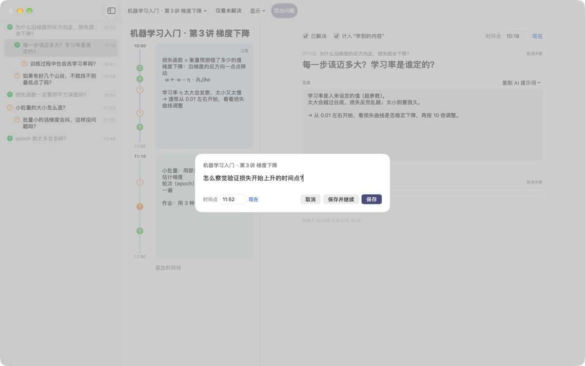
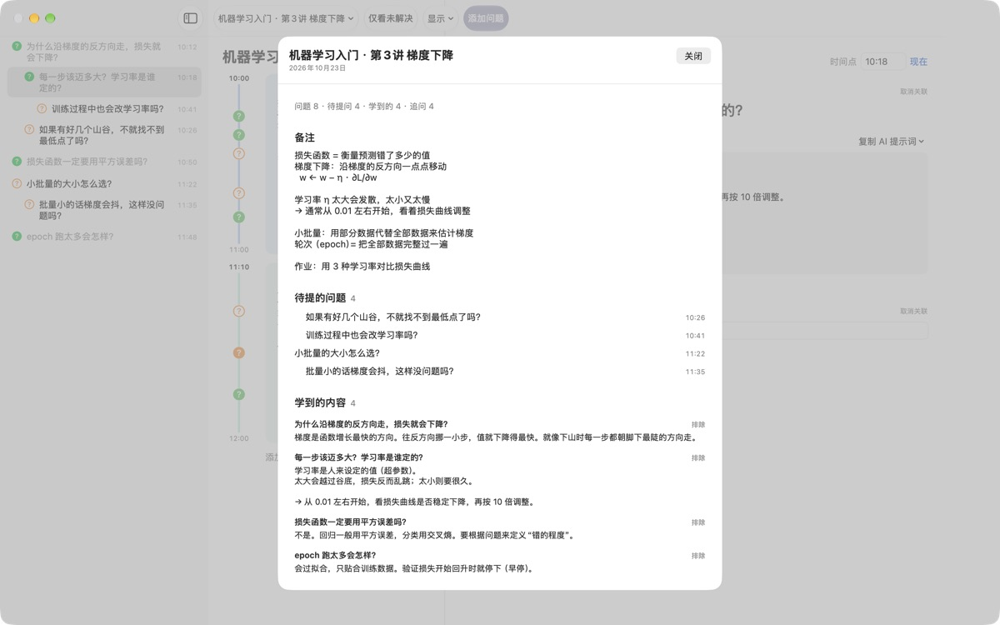
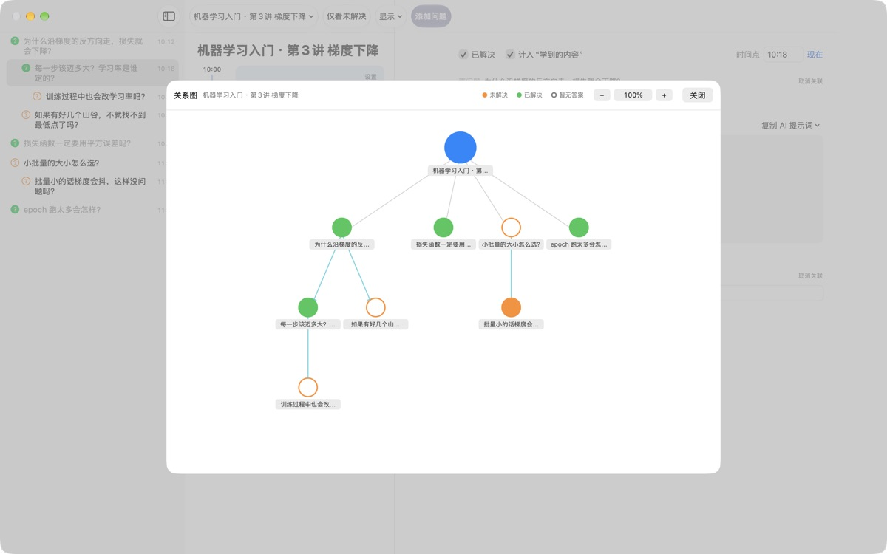

课上冒出的疑问，
别再让它溜走
按下 ⌘⇧N，写一行，问题就会留在那一分钟的笔记旁边。课照常听，答案以后再找。
适用于 macOS 14 或更高版本。无需账户，数据只保存在这台 Mac 上。

在这里试试
你正在听一节机器学习课。写下一个问题并保存，对应时间的时间块旁就会出现一个 ?。把时间改到时间块之外，就会新建一个时间块来容纳它。
下课以后，你还记得那个问题吗？
刚想到“咦，为什么？”，老师已经讲到下一页了。随手画在页边的问号，过后就想不起是哪段讲解引出的，问题也就一直没有答案。LectureQ 把每个问题和那一刻的笔记钉在一起，在你弄明白之前一直摆在眼前。
不打断听课也能提问
点工具栏里的 添加问题 或按 ⌘⇧N 打开输入框。时间会自动填好，按 Return 保存，按 ⌘Return 保存后马上写下一个。
每个问题都会以 ? 显示在对应时间块旁边，以后一眼就能看出它出自课程的哪一段。

解决的问题，变成学到的内容
用自己的话写下答案并标为已解决，它就会出现在摘要的“学到的内容”里。还没解决的留在“待提的问题”中，下节课要问的清单自然就有了。
问题详情里的 复制 AI 提示词 会把填好课程名和那一刻笔记的提示词复制到剪贴板，贴进你常用的 AI 服务就行。

看清思路是怎么展开的
由问题引出的追问会缩进排在原问题下方，关系图里则用箭头连起来。点一下节点就能跳到那个问题。
还可以在学习状态里写下听课前的自己、学完后想成为的样子和想学的东西，前后对照。

三步就能开始
- 1
新建课程
在工具栏左侧的课程菜单里添加，也可以导入保存为 Markdown 的对话。
- 2
想到就记
按
⌘⇧N，写一行就够，时间已经填好。 - 3
之后再整理答案
写下答案，点一下 ? 标为已解决，它就进入“学到的内容”。
键盘快捷键
- ⌘⇧N
- 添加问题
- Return
- 保存
- ⌘Return
- 保存并继续写下一个
- Esc
- 取消
- ⌘1
- 摘要：待提的问题、学到的内容、备注
- ⌘2
- 关系图：原问题与追问的关系
- ⌘3
- 时间块：所有课程的时间块按时间排列
- ⌘4
- 学习状态
- ⌘+ · ⌘- · ⌘0
- 放大、缩小、恢复默认字号
这些都能在菜单栏的“显示”菜单里找到。
所有功能免费
免费
- 快速提问和时间块笔记
- 追问与关系图
- 摘要、时间块总览和学习状态
- 五个步骤的 AI 提示词，一键复制
- 从 Markdown 导入对话
支持开发者
- 觉得好用的话，可以在设置里送一点小费
- 送小费不会解锁额外功能
不送小费也能使用全部功能。
没有广告，也不用注册。记录只保存在这台 Mac 上。
常见问题
问题旁边 ? 的颜色是什么意思？
列表里，橙色空心圆是还没解决的问题，绿色实心圆是已解决的问题。点 ? 可以切换，打开工具栏的 仅看未解决 就只显示没解决的问题。时间块旁的 ? 用颜色表示是否已解决，实心表示已经写了答案。
时间块是怎么来的？
点 添加时间块 会从此刻开始一个新时间块，上一个时间块到此结束。如果在不属于任何时间块的时刻记下问题，会自动创建包含这个时刻的时间块。在时间块右上角的 设置 里可以改颜色、开始时间和时长，或删除它。手动删除过时间块的课程，不会再自动创建时间块。
“已解决”和“学到的内容”有什么区别？
在问题详情里勾选 已解决 后，还可以选择是否计入“学到的内容”。“学到的内容”只收录已解决且选择计入的问题。在摘要里也能移出或重新加入，答案都会保留。
怎么用 AI 找答案？
在问题详情“答案”右侧的 复制 AI 提示词 中选一个步骤：梳理问题、寻找答案、反问答案、提取追问、给我的答案打分。填好课程名、那一刻的笔记、学习状态和原问题的提示词会复制到剪贴板。目前提示词正文是韩语，大多数 AI 都能看懂，你可以让它用中文回答。“给我的答案打分”需要先在答案栏里用自己的话写下内容。应用本身不会与 AI 服务通信。
可以导入保存为 Markdown 的对话吗？
在课程菜单里选 从 Markdown 导入… 并选择文件，就会生成一门新课程。# 标题 成为课程名，每个 ## 小节 里的第一个问题是原问题，后面的问题是追问。文件中第一个出现的说话人的发言成为问题，其他人的发言成为前一个问题的答案。原文件不会被修改。
怎么删除问题或课程？
在列表中右键点问题，选 删除；课程用课程菜单里的 删除当前课程。删除课程会一并删除它的问题和时间块，且无法恢复，重要的记录请先备份。
数据存在哪里？怎么备份？
所有记录只保存在这台 Mac 上，不会上传。备份时先退出应用，再把 ~/Library/Containers/com.lectureq.LectureQ/Data/Library/Application Support/LectureQ/ 文件夹连同 -wal、-shm 文件整个复制下来。应用只发送版本号、打开天数这类匿名使用统计，不会发送你写的内容。
字太小了。
⌘+ 放大，⌘- 缩小，⌘0 恢复默认。可在 85% 到 200% 之间调整，设置会被记住。
哪些 Mac 能用？
运行 macOS 14 或更高版本的 Mac 都可以。源代码公开在 GitHub 的 M1zz/LectureQ。
遇到问题该找谁？
可以在应用的设置（⌘,）里发送反馈，或发邮件到下面的地址。写上 macOS 版本和出问题时在做什么，我们能更快排查。
有问题或建议？欢迎发邮件到 mizzking75@gmail.com。